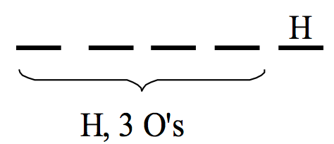
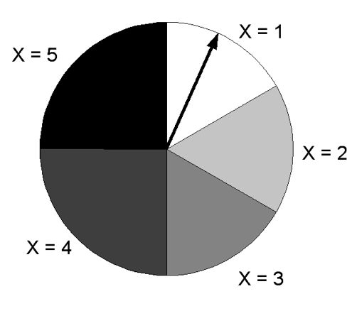
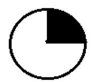
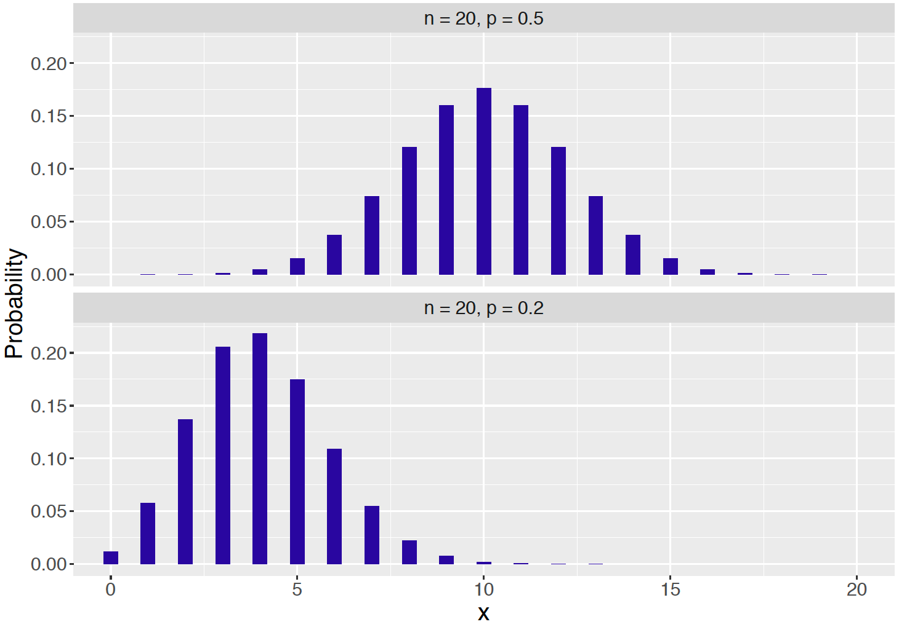

Chapter 4 Discrete Distributions
4.1 Introduction: The Hat Check Problem
Some time ago, it was common for men to wear hats when they went out for dinner. When one entered a restaurant, each man would give his hat to an attendant who would keep the hat in a room until his departure. Suppose the attendant gets confused and returns hats in some random fashion to the departing men. What is the chance that no man receives his personal hat? How many hats, on average, will be returned to the right owners?
This is a famous “matching” probability problem. To start thinking about this problem, it is helpful to start with some simple cases. Suppose only one man checks his hat at the restaurant. Then obviously this man will get his hat back. Then the probability of “no one receives the right hat” is 0, and the average number of hats returned will be equal to 1.
Let \(n\) denote the number of men who enter the restaurant. The case \(n = 1\) was considered above. What if \(n = 2\)? If the two men are Barry and Bobby, then there are two possibilities shown in the following table. These two outcomes are equally likely, so the probability of no match is 1/2. Half the time there will be 2 matches and half the time there will be 0 matches, and so the average number of matches will be 1.
Table 4.1. Possibilities of the hat check problem when n = 2.
| Barry receives | Bobby receives | # of matching hats | |
|---|---|---|---|
| 1. | Barry’s hat | Bobby’s hat | 2 |
| 2. | Bobby’s hat | Barry’s hat | 0 |
What if we have \(n = 3\) men that we’ll call Barry, Bobby, and Jack. Then there are 3! = 6 ways of returning hats to men, listed in Table . Again these outcomes are equally likely, so the probability of no match is 2/6. One can show that the average number of matches is again 1.
Table 4.2. Possibilities of the hat check problem when n = 2.
| Barry receives | Bobby receives | Jack receives | # of matching hats | |
|---|---|---|---|---|
| 1. | Barry’s hat | Bobby’s hat | Jack’s hat | 3 |
| 2. | Barry’s hat | Jack’s hat | Bobby’s hat | 1 |
| 3. | Bobby’s hat | Barry’s hat | Jack’s hat | 1 |
| 4. | Bobby’s hat | Jack’s hat | Barry’s hat | 0 |
| 5. | Jack’s hat | Barry’s hat | Bobby’s hat | 0 |
| 6. | Jack’s hat | Bobby’s hat | Barry’s hat | 1 |
What happens if there are a large number of hats checked? It turns out that the probability of no matches is given by \[ Prob({\rm no} \, {\rm matches}) = \frac{1}{e}, \] where \(e\) is the special irrational number 2.718. Also it is interesting that the average number of matches for any value of \(n\) is given by
Average number of matches = 1.
The reader will get the opportunity of exploring this famous problem by simulation in the end-of-chapter exercises.
4.2 Random Variable and Probability Distribution
Suppose that Peter and Paul play a simple coin game. A coin is tossed. If the coin lands heads, then Peter receives $2 from Paul; otherwise Peter has to pay $2 to Paul. The game is played for a total of five coin flips. After the five flips, what is Peter’s net gain (in dollars)?
The answer depends on the results of the coin flips. There are two possible outcomes of each coin flip (heads or tails) and, by applying the multiplication rule, there are \(2^5 = 32\) possibilities for the five flips. The 32 possible outcomes are written below.
| \(HHHHH\) | \(HTHHH\) | \(THHHH\) | \(TTHHH\) |
| \(HHHHT\) | \(HTHHT\) | \(THHHT\) | \(TTHHT\) |
| \(HHHTH\) | \(HTHTH\) | \(THHTH\) | \(TTHTH\) |
| \(HHHTT\) | \(HTHTT\) | \(THHTT\) | \(TTHTT\) |
| \(HHTHH\) | \(HTTHH\) | \(THTHH\) | \(TTTHH\) |
| \(HHTHT\) | \(HTTHT\) | \(THTHT\) | \(TTTHT\) |
| \(HHTTH\) | \(HTTTH\) | \(THTTH\) | \(TTTTH\) |
| \(HHTTT\) | \(HTTTT\) | \(THTTT\) | \(TTTTT\) |
For each possible outcome of the flips, say \(HTHHT\), there will be a corresponding net gain for Peter. For this outcome, Peter won three times and lost twice, so his net gain is \(3(2) - 2(2) = 2\) dollars. The net gain is an example of a random variable – this is simply a number that is assigned to each outcome of the random experiment.
Generally, a capital letter will be used to represent a random variable – here the capital letter \(G\) denotes Peter’s gain in this experiment. For each of the 32 outcomes, one can assign a value of \(G\) – this is done in Table .
Table 4.3. The 32 outcomes and value of G in the 5 coin flips problem.
| \(HHHHH, G=10\) | \(HTHHH, G=6\) | \(THHHH, G=6\) | \(TTHHH, G=2\) |
| \(HHHHT, G=6\) | \(HTHHT, G=2\) | \(THHHT, G=2\) | \(TTHHT, G=-2\) |
| \(HHHTH, G=6\) | \(HTHTH, G=2\) | \(THHTH, G=2\) | \(TTHTH, G=-2\) |
| \(HHHTT, G=2\) | \(HTHTT, G=-2\) | \(THHTT, G=-2\) | \(TTHTT, G=-6\) |
| \(HHTHH, G=6\) | \(HTTHH, G=2\) | \(THTHH, G=2\) | \(TTTHH, G=-2\) |
| \(HHTHT, G=2\) | \(HTTHT, G=-2\) | \(THTHT, G=-2\) | \(TTTHT, G=-6\) |
| \(HHTTH, G=2\) | \(HTTTH, G=-2\) | \(THTTH, G=-2\) | \(TTTTH, G=-6\) |
| \(HHTTT, G=-2\) | \(HTTTT, G=-6\) | \(THTTT, G=-6\) | \(TTTTT, G=-10\) |
It is seen from the table that the possible gains for Peter are -10, -6, -2, 2, 6, and 10 dollars. One is interested in the probability that Peter will get each possible gain. To do this, one puts all of the possible values of the random variable in a table. Although a capital letter will be used to denote a random variable, a small letter will denote a specific value of the random variable. So \(g\) refers to one specific value of the gain \(G\), and \(P(G = g)\) refers to the corresponding probability.
Table 4.4. Table of gain, number of outcomes, and corrresponding probability, step 1.
| Gain \(g\) (dollars) | Number of outcomes | \(P(G = g)\) |
|---|---|---|
| \(-10\) | ||
| \(-6\) | ||
| \(-2\) | ||
| 2 | ||
| 6 | ||
| 10 |
What is the probability that Peter gains $6 in this game? Looking at the table of outcomes, one sees that Peter won $6 in five of the outcomes. Since there are 32 possible outcomes of the five flips, and each outcome has the same probability, one sees that the probability of Peter winning $6 is 5/32.
This process is continued for all of the possible values of \(G\) – one places the number of outcomes for each value and the corresponding probability in the table. This is an example of a probability distribution for \(G\) – this is simply a list of all possible values for a random variable together with the associated probabilities.
Table 4.5. Table of gain, number of outcomes, and corrresponding probability, step 2.
| Gain \(g\) (dollars) | Number of outcomes | \(P(G = g)\) |
|---|---|---|
| \(-10\) | 1 | 1/32 |
| \(-6\) | 5 | 5/32 |
| \(-2\) | 10 | 10/32 |
| 2 | 10 | 10/32 |
| 6 | 5 | 5/32 |
| 10 | 1 | 1/32 |
4.3 Probability distribution
In general, suppose \(X\) is a discrete random variable. This type of random variable only assigns probability to a discrete set of values. In other words, the {} of \(X\) is a set of discrete values. The function \(f(x)\) is a probability mass function (pmf) for \(X\) if the function satisfies two properties.
- \(f(x) \ge 0\) for each possible value \(x\) of \(X\)
- \(\sum_x f(x) = 1\)
The table of values of the gain \(G\) and the associated probabilities \(f(g) = P(G = g)\) do satisfy these two properties. Each of the assigned probabilities is positive, so property (1) is satisfied. If one sums the assigned probabilities, one finds \[ \sum_g P(G = g) = \frac{1}{32} + \frac{5}{32} + \frac{10}{32} + \frac{10}{32} + \frac{5}{32} + \frac{1}{32} = 1, \] and so property (2) is satisfied.
A probability distribution is a listing of the values of \(X\) together with the associated values of the pmf. One graphically displays this probability distribution with a bar graph. One places all of the values of \(G\) on the horizontal axis, marks off a probability scale on the vertical scale, and then draws vertical lines on the graph corresponding to the pmf values.

Figure 4.1: Probability distribution of the net gains for Peter in the Peter-Paul game.
Figure visually shows that it is most likely for Peter to finish with a net gain of \(+2\) or \(-2\) dollars. Also note the symmetry of the graph – the graph looks the same way on either side of 0. This symmetry about 0 indicates that this game is fair. We will shortly discuss a way of summarizing this probability distribution that confirms that this is indeed a fair game.
Simulating the Peter-Paul Game
It is straightforward to simulate this game in R. A function one_play() is written which will play the game one time. The sample() function is used to flip a coin five times and the function returns the net gain for Paul.
one_play <- function(){
flips <- sample(c("H", "T"),
size = 5,
replace = TRUE)
2 * sum(flips == "H") -
2 * sum(flips == "T")
}The replicate() function is used to simulate 1000 plays of the game and the net gains for all plays are stored in the vector G. If one constructs a bar graph of the net gains, it will resemble the graph of the probability distribution of \(G\) showed in the above figure.

Figure 4.2: Bar graph of net gains from simulation of Peter-Paul game.
4.4 Summarizing a Probability Distribution
Once we have constructed a probability distribution – like was one above– it is convenient to use this to find probabilities.
What is the chance that Peter will win at least $5 in this game? Looking at the probability table, ones sees that winning “at least $5” includes the possible values
\(G\) = 6 and \(G\) = 10
One finds the probability of interest by adding the probabilities of the individual values. \[\begin{align*} P(G \ge 5) &= P(G = 6 \, \, {\rm or} \, \, G = 10) \\ &= P(G = 6) + P(G = 10) \\ &= \frac{5+1}{32} = \frac{6}{32}. \end{align*}\]
What is the probability Peter wins money in this game? Peter wins money if the gain \(G\) is positive and this corresponds to the values \(G = 2, 6, 10\). By adding up the probabilities of these three values, one sees the probability that Peter wins money is \[\begin{align*} P({\rm Peter \, \, wins}) &= P(G > 0) \\ &= P(G = 2) + P(G = 6) + P(G = 10) \\ &= \frac{10 + 5+1}{32} = \frac{1}{2}. \end{align*}\] It is easy to compute the probability Peter loses money – also 1/2. Since the probability Peter wins in the game is the same as the probability he loses, the game is clearly fair.
When one has a distribution of data, it is helpful to summarize the data with a single number, such as median or mean, to get some understanding about a typical data value. In a similar fashion, it is helpful to compute an “average” of a probability distribution – this will give us some feeling about typical or representative values of the random variable when one observes it repeated times.
A common measure of “average” is the mean or expected value of \(X\), denoted \(\mu\) or \(E(X)\). The mean (or expected value) is found by
- Computing the product of a value of \(X\) and the corresponding value of the pmf \(f(x) = P(X = x)\) for all values of \(X\).
- Summing the products.
In other words, one finds the mean by the formula \[\begin{equation} \mu = \sum_x x f(x). \tag{4.1} \end{equation}\]
The computation of the mean for the Peter-Paul game is illustrated in Table . For each value of the gain \(G\), the value is multiplied by the associated probability – the products are given in the rightmost column of the table. Then the products are added – one sees that the mean of \(G\) is \(\mu = 0\).
Table 4.6. Calculation of the mean for Peter-Paul game.
| \(g\) | \(P(G = g)\) | \(g \times P(G = g)\) |
|---|---|---|
| \(-10\) | 1/32 | \(-10/32\) |
| \(-6\) | 5/32 | \(-30/32\) |
| \(-2\) | 10/32 | \(-20/32\) |
| 2 | 10/32 | 20/32 |
| 6 | 5/32 | 30/32 |
| 10 | 1/32 | 10/32 |
| SUM | 1 | 0 |
How does one interpret a mean value of 0? Actually it is interesting to note that \(G = 0\) is not a possible outcome of the game – that is, Peter cannot break even when this game is played. But if Peter and Paul play this game a large number of times, then the value \(\mu\)= 0 represents (approximately) the mean winnings of Peter in all of these games.
Simulating the Peter-Paul Game (continued)
The functions sample() and replicate() were earlier illustrated to simulate this game 1000 times in R. Peter’s winnings in the different games are stored in the vector G. Here is a display of Peter’s winnings in the first 100 games:
## [1] 6 -2 -6 -2 -2 6 6 6 2 2 -6 2 -2 -10 -2 2 -10
## [18] -2 2 -6 6 10 2 -2 -2 -2 -6 2 -6 -2 -2 2 6 -10
## [35] 2 -6 -2 2 -6 -2 2 -6 2 2 6 2 -6 -2 -6 6 -2
## [52] 6 2 10 2 6 -6 -2 -2 -2 2 6 -2 2 -2 -6 2 -2
## [69] -2 6 -2 2 6 -6 2 2 -2 2 -2 -10 6 2 6 2 -2
## [86] -2 2 -2 -2 -2 2 -10 2 2 6 -6 -6 -2 -2 -2One approximates the mean winning \(\mu\) by finding the sample mean \(\bar G\) of the winning values in the 1000 simulated games.
## [1] -0.26This value is approximately equal to the mean of \(G\), \(\mu\)= 0. If Peter was able to play this game for a much larger number of games, then one would see that his average winning would be very close to \(\mu = 0\).
4.5 Standard Deviation of a Probability Distribution
Consider two dice – one we will call the “fair die” and the other one will be called the “loaded die”. The fair die is the familiar one where each possible number (1 through 6) has the same chance of being rolled. The loaded die is designed in a special way that 3’s or 4’s are relatively likely to occur, and the remaining numbers (1, 2, 5, and 6) are unlikely to occur. Table gives the probabilities of the possible rolls for both dice.
Table 4.7. Probabilities of the possible rolls for a fair die and a loaded die.
| Roll | Probability | Roll | Probability |
| 1 | 1/6 | 1 | 1/12 |
| 2 | 1/6 | 2 | 1/12 |
| 3 | 1/6 | 3 | 1/3 |
| 4 | 1/6 | 4 | 1/3 |
| 5 | 1/6 | 5 | 1/12 |
| 6 | 1/6 | 6 | 1/12 |
How can one distinguish the fair and loaded dice? An obvious way is to roll each a number of times and see if we can distinguish the patterns of rolls that we get. One first rolls the fair die 20 times with the results
3, 3, 5, 6, 6, 1, 2, 1, 4, 3, 2, 5, 6, 4, 2, 5, 6, 1, 2, 3 (mean 3.5)
Next one rolls the loaded die 20 times with the results
3, 2, 1, 4, 4, 1, 4, 3, 3, 3, 1, 3, 3, 5, 3, 3, 3, 6, 3, 4 (mean 3.1)
Figure displays dotplots of 50 rolls from each of the two dice.

Figure 4.3: Dotplots of 50 rolls of the fair die and the loaded die.
What does one see? For the fair die, the rolls appear to be evenly spread out among the six possible numbers. In contrast, the rolls for the loaded die tend to concentrate on the values and 3 and 4, and the remaining numbers were less likely to occur.
Can one compute a summary value to contrast the probability distributions for the fair and loaded dice? One summary number for a random variable has already been discussed, the mean \(\mu\). This number represents the average outcome for the random variable when one performs the experiment many times.
Suppose the mean is computed for each of the two probability distributions. For the fair die, the mean is given by \[\begin{align*} \mu_{Fair Die} &= (1) (\frac{1}{6}) + (2) (\frac{1}{6}) + (3) (\frac{1}{6}) + (4) (\frac{1}{6}) + (5) (\frac{1}{6}) + (6) (\frac{1}{6}) \\ &= 3.5, \end{align*}\] and for the loaded die the mean is given by \[\begin{align*} \mu_{Loaded Die} &= (1) (\frac{1}{12}) + (2) (\frac{1}{12}) + (3) (\frac{1}{3}) + (4) (\frac{1}{3}) + (5) (\frac{1}{12}) + (6) (\frac{1}{12}) \\ &= 3.5. \end{align*}\]
The means of the two probability distributions are the same – this means that one will tend to get the same average roll when the fair die and the loaded die are rolled many times.
But one knows from our rolling data that the two probability distributions are different. For the loaded die, it is more likely to roll 3’s or 4’s. In other words, for the loaded die, it is more likely to roll a number close to the mean value \(\mu\) = 3.5.
The standard deviation of a random variable \(X\), denoted by the Greek letter \(\sigma\), measures how close the random variable is to the mean \(\mu\). It is called a standard deviation since it represents an “average” (or standard) distance (or deviation) from the mean \(\mu\). This standard deviation, denoted \(\sigma\) is defined as follows: \[\begin{equation} \sigma = \sqrt{\Sigma_x (x - \mu)^2 P(X = x)}. \tag{4.2} \end{equation}\]
To find the standard deviation \(\sigma\) for a random variable, one first computes (for all values of \(X\)) the difference (or deviation) of \(x\) from the mean value \(\mu\). Next, one squares each of the differences, and finds the average squared deviation by multiplying each squared deviation by the corresponding value of the pmf and summing the products. The standard deviation \(\sigma\) is the square root of the average squared deviation.
Tables and illustrate the computation of the standard deviation for the roll of the fair die and for the roll of the loaded die, where \(R\) denotes the roll random variable.
Table 4.8. Computation of the standard deviation \(\sigma_{Fair \, Die}\) for the fair die.
| \(r\) | \(r - \mu\) | \((r - \mu)^2 \times\) \(P(R = r)\) |
|---|---|---|
| 1 | \(1 - 3.5 = -2.5\) | \((-2.5)^2 \times (1/6)\) |
| 2 | \(2 - 3.5 = -1.5\) | \((-1.5)^2 \times (1/6)\) |
| 3 | \(3 - 3.5 = -0.5\) | \((-0.5)^2 \times (1/6)\) |
| 4 | \(4 - 3.5 = 0.5\) | \((0.5)^2 \times (1/6)\) |
| 5 | \(5 - 3.5 = 1.5\) | \((1.5)^2 \times (1/6)\) |
| 6 | \(6 - 3.5 = 2.5\) | \((2.5)^2 \times (1/6)\) |
| SUM | 2.917 |
\[\sigma_{Fair Die} = \sqrt{2.917} = 1.71\]
Table 4.9. Computation of the standard deviation \(\sigma_{Loaded \, Die}\) for the loaded die.
| \(r\) | \(r - \mu\) | \((r - \mu)^2 \times\) \(P(R = r)\) |
|---|---|---|
| 1 | \(1 - 3.5 = -2.5\) | \((-2.5)^2 \times (1/12)\) |
| 2 | \(2 - 3.5 = -1.5\) | \((-1.5)^2 \times (1/12)\) |
| 3 | \(3 - 3.5 = -0.5\) | \((-0.5)^2 \times (1/3)\) |
| 4 | \(4 - 3.5 = 0.5\) | \((0.5)^2 \times (1/3)\) |
| 5 | \(5 - 3.5 = 1.5\) | \((1.5)^2 \times (1/12)\) |
| 6 | \(6 - 3.5 = 2.5\) | \((2.5)^2 \times (1/12)\) |
| SUM | 1.583 |
\[\sigma_{Loaded Die} = \sqrt{1.583} = 1.26\]
It is seen from our calculations that \[\sigma_{Fair Die}= 1.71, \sigma_{Loaded Die} = 1.26\] What does this mean? Since the loaded die roll has a smaller standard deviation, this means that the roll of the loaded die tends to be closer to the mean (3.5) than for the fair die. When one rolls the loaded die many times, one will notice a smaller spread or variation in the rolls than when one rolls the fair die many times.
Simulating Rolls of Fair and Loaded Dice
One illustrates the difference in distributions of rolls of fair and loaded dice by an R simulation. The probabilities of 100 rolls of each of the two types of dice are stored in the vectors die1 and die2. Two applications of the sample() function are used to simulated rolls – the rolls for the fair and loaded dice are stored in the vectors rolls1 and rolls2. respectively.
die1 <- c(1, 1, 1, 1, 1, 1) / 6
die2 <- c(1, 1, 4, 4, 1, 1) / 12
rolls1 <- sample(1:6, prob = die1,
size = 100,
replace = TRUE)
rolls2 <- sample(1:6, prob = die2,
size = 100,
replace = TRUE)One approximates the means and standard deviations for the probability distributions by computing sample means and sample standard deviations of the simulated rolls.
## [1] 3.520000 1.579413## [1] 3.800000 1.421338Note that both types of dice display similar means, but the loaded die displays a smaller standard deviation than the fair die.
Interpreting the standard deviation for a bell-shaped distribution
Once one has computed a standard deviation \(\sigma\) for a random variable, how can one use this summary measure? One use of \(\sigma\) was illustrated in the dice example above. The probabilities for the roll of the loaded die were more concentrated about the mean than the probabilities for the roll of the fair die, and that resulted in a smaller value of \(\sigma\) for the roll of the loaded die.
The standard deviation has an attractive interpretation when the probability distribution of the random variable is bell-shaped. When the probability distribution has the following shape:
Figure 4.4: Bell-shaped curve.
then approximately
- the probability that \(X\) falls within one standard deviation of the mean is 0.68.
- the probability that \(X\) falls within two standard deviations of the mean is 0.95.
Simulating Rolls of Ten Dice
To illustrate this interpretation of the standard deviation, suppose ten fair dice are rolled and the sum of the numbers appearing on the dice is recorded. It is easy to simulate this experiment in R using the following script. The function roll10() will roll 10 dice, the function replicate() repeats the experiment for 1000 trials, and the variable sum_rolls contains the sum of the rolls from the experiments.
roll10 <- function(){
sum(sample(1:6, size = 10, replace = TRUE))
}
sum_rolls <- replicate(1000, roll10())A histogram of the results from 1000 trials of this experiment is shown in Figure .

Figure 4.5: Histogram of sum of ten dice in 1000 simulated rolls.
Note that the shape of this histogram is approximately bell shaped about the value 35. Since this histogram is a reflection of the probability distribution of the sum of the rolls of ten dice, this means that the shape of the probability distribution for the sum will also be bell-shaped.
For this problem, it can be shown (as an end-of-chapter exercise) that the mean and standard deviation for the sum of the rolls of ten fair dice are respectively \[\mu = 35, \, \, \sigma = 5.4.\] Applying our rule, the probability that the sum falls between
\(\mu - \sigma\) and \(\mu + \sigma\), or 35 \(-\) 5.4 = 29.6 and 35 + 5.4 = 40.4
is approximately 0.68, and the probability that the sum of the rolls falls between
\(\mu - 2 \sigma\) and \(\mu + 2\sigma\), or 35 \(-\) 2(5.4) = 24.2 and 35 + 2 (5.4) = 45.8
is approximately 0.95.
Simulating Rolls of Ten Dice (continued)
To see if these are accurate probability computations, return to our simulation of this experiment and see how often the sum of the ten rolls fell within the above limits. Recall that the simulation sums were stored in the vector . Below the proportions of sums of ten rolls that fall between 29.6 and 40.4, and between 24.2 and 45.8, are computed.
## [1] 0.677## [1] 0.931One sees that the proportions of values that fall within these limits are 0.702 and 0.955, respectively. Since these proportions are close to the numbers 0.68 and 0.95, we see in this example that this rule is pretty accurate.
4.6 Coin-Tossing Distributions
Introduction: A Galton Board
A Galton board is a physical device for simulating a special type of random experiment. It was named after the famous scientist Sir Francis Galton who lived from 1822 to 1911. Galton is noted for a wide range of achievements in the areas of meteorology, genetics, psychology, and statistics. The Galton board consists of a set of pegs laid out in the configuration shown in Figure – one peg is in the top row, two pegs are in the second row, three pegs in the third row, and so on. A ball is placed above the top peg. When the ball is dropped and hits a peg, it is equally likely to fall left or right. We are interested in the location of the ball after striking five pegs – as shown in the figure, the ball can land in locations 0, 1, 2, 3, 4, or 5.
Figure 4.6: Illustration of a Galton board.
Figure shows the path of four balls that fall through a Galton board. The chances of falling in the locations follow a special probability distribution that has a strong connection with a simple coin-tossing experiment.
Figure 4.7: Illustration of the path of four balls falling through a Galton board.
Consider the following random experiment. One takes a quarter and flip it ten times, recording the number of heads one gets. There are four special characteristics of this simple coin-tossing experiment.
- One is doing the same thing (flip the coin) ten times. We will call an individual coin flip a trial, and so our experiment consists of ten identical trials.
- On each trial, there are two possible outcomes, heads or tails.
- In addition, the probability of flipping heads on any trial is 1/2.
- The results of different trials are independent. This means that the probability of heads, say, on the fourth flip, does not depend on what happened on the first three flips.
One is interested in the number of heads one gets – this number will be referred to \(X\). In particular, one is interested in the probability of getting five heads, or \(Prob\)(\(X\) = 5).
In this section, one will see that this Binomial probability model applies to many different random phenomena in the real world. Probability computations for the Binomial and the closely related Negative Binomial models will be discussed and the usefulness of these models in representing the variation in real-life experiments will be illustrated.
4.7 Binomial probabilities
Let’s return to our experiment where a quarter is flipped ten times, recording \(X\), the number of heads. One is interested in the probability of flipping exactly five heads, that is, \(Prob\)(\(X = 5\)). To compute this probability, one first has to think of possible outcomes in this experiment. Suppose one records if each flip is heads (\(H\)) or tails (\(T\)). Then one possible outcome with ten flips is
| Trial | 1 | 2 | 3 | 4 | 5 | 6 | 7 | 8 | 9 | 10 |
| Result | \(H\) | \(H\) | \(T\) | \(T\) | \(H\) | \(T\) | \(T\) | \(H\) | \(H\) | \(T\) |
Another possible outcome is \(TTHHTHTHHH\). The sample space consists of all possible ordered listings of ten letters, where each letter is either an \(H\) or a \(T\).
Next, consider computing the probability of a single outcome of ten flips such as the \(HHTTHHTHHT\) sequence shown above. The probability of this outcome is written as
\(P\)(“\(H\) on toss 1” AND “\(H\) on toss 2” AND … AND “\(T\) on toss 10”).
Using the fact that outcomes on different trials are independent, this probability is written as the product
\(P\)(\(H\) on toss 1)\(\times\) \(P\)(\(H\) on toss 2) \(\times ... \times\) \(P\)(\(T\) on toss 10).
Since the probability of heads (or tails) on a given trial is 1/2, one has \[ P(HHTTHHTTHT) = \frac{1}{2} \times \frac{1}{2} \times ... \times \frac{1}{2} = \left(\frac{1}{2}\right)^{10}. \] Actually, the probability of any outcome (sequence of ten letters with \(H\)’s or \(T\)’s) in this experiment is equal to \(\left(\frac{1}{2}\right)^{10}.\)
Let’s return to our original question – what is the probability that one gets exactly five heads? If one thinks of the individual outcomes of the ten trials, then one will see that there are many ways to get five heads. For example, one could observe
\(HHHHHTTTTT\) or \(HHHHTTTTTH\) or \(HHHTTTTTHH\)
In each of the three outcomes, note that the number of heads is five. How many outcomes (like the ones shown above) will result in exactly five heads? As before, label the outcomes of the individual flips by the trial number:
| Trial | 1 | 2 | 3 | 4 | 5 | 6 | 7 | 8 | 9 | 10 |
| Outcome |
If five heads are observed, then one wishes to place five \(H\)’s in the ten slots above. In the outcome \(HHHHHTTTTT\), the heads occur in trials 1, 2, 3, 4, 5, and in the outcome \(HHHTTTTTHH\), the heads occur in trials 1, 2, 3, 9, and 10. If one observes exactly 5 heads, then one must choose five numbers from the possible trial numbers 1, 2, …, 10 to place the five H’s. There are \(10 \choose 5\) ways of choosing these trial numbers. Note that the order in which one chooses the trial numbers is not important. Since there are ways of getting exactly five heads, and each outcome has probability \(\left(\frac{1}{2}\right)^{10}\), one sees that \[ Prob(X = 5) = {10 \choose 5} \left(\frac{1}{2}\right)^{10} = 0.246. \]
From the complement property, one sees that the \(Prob\)(five heads are {} tossed) = \(1- 0.246\) = 0.754. It is interesting to note that although one expects to get five heads when we flip a coin ten times, it is actually much more likely {} to flip five heads than to flip five heads.
4.8 Binomial experiments
Although the coin tossing experiment described above seems pretty artificial, many random experiments share the same basic properties as coin tossing. Consider the following Binomial experiment:
- One repeats the same basic task or trial many times – let the number of trials be denoted by \(n\).
- On each trial, there are two possible outcomes, which are called “success” or “failure”. One could call the two outcomes “black” and “white”, or “0” or “1”, but they are usually called success and failure.
- The probability of a success, denoted by \(p\), is the same for each trial.
- The results of outcomes from different trials are independent.
Here are some examples of Binomial experiments.
Example: A sample survey. Suppose the Gallup organization is interested in estimating the proportion of adults in the United States who use the popular auction website eBay. They take a random sample of 100 adults and 45 say that they use eBay. In this story, we see that
- The results of this survey can be considered to be a sequence of 100 trials where one trial is asking a particular adult if he or she uses eBay.
- There are two possible responses to the survey question – either the adult says “yes” (he or she uses eBay) or “no” (he or she doesn’t use eBay).
- Suppose the proportion of all adults that use eBay is \(p\). Then the probability that the adult says “yes” will be p.
- If the sampling is done randomly, then the chance that one person says “yes” will not depend on the answers of the people who were previously asked. This means that the responses of different adults to the question can be regarded as independent events.
Example: A baseball hitter’s performance during a game. Suppose you are going to a baseball game and your favorite player comes to bat five times during the game. This particular player is a pretty good hitter and his batting average is about 0.300. You are interested in the number of hits he will get in the game. This can also be considered a Binomial experiment:
- The player will come to bat five times – these five at-bats can be considered the five trials of the experiment (\(n\) = 5).
- At each at-bat, there are two outcomes of interest – either the player gets a hit or he doesn’t get a hit.
- Since the player’s batting average is 0.300, the probability that he will get a hit in a single at-bat is \(p\) = 0.300.
- It is reasonable to assume that the results of the different at-bats are independent. That means that the chance that the player will get a hit in his fifth at-bat will be unrelated to his performance in the first four at-bats. We note that this is a debatable assumption, especially if you believe that a player can have a hot-hand.
Example: Sampling without replacement. Suppose a committee of four will be chosen at random from a group of five women and five men. You are interested in the number of women that will be in the committee. Is this a Binomial experiment?
- If one thinks of selecting this committee one person at a time, then one can think this experiment as four trials (corresponding to selecting the four people).
- On each trial, there are two possible outcomes – either one selects a woman or a man. At this point, things are looking good – this may be a Binomial experiment. But…
- Is the probability of choosing a woman the same for each trial? For the first pick, the chance of picking a woman is 5/10. But once this first person has been chosen, the probability of choosing a woman is not 5/10 – it will be either 4/9 or 5/9 depending on the outcome of the first trial. So the probability of a “success” is not the same for all trials, so this violates the third property of a Binomial experiment.
- Likewise, in this experiment, the outcomes of the trials are not independent. The probability of choosing a woman on the fourth trial is dependent on who was selected in the first three trials, so again the Binomial assumption is violated.
4.9 Binomial computations
A Binomial experiment is defined by two numbers
\(n\) = the number of trials, and
\(p\) = probability of a “success” on a single trial.
If one recognizes an experiment as being Binomial, then all one needs to know is \(n\) and \(p\) to determine probabilities for the number of successes \(X\). Using the same argument as was made in the coin-tossing example, one can show that the probability of \(x\) successes in a Binomial experiment is given by \[\begin{equation} P(X = x) = {n \choose x} p^x (1 - p)^{n-x}, \, \, k = x ..., n. \tag{4.3} \end{equation}\]
Let’s illustrate using this formula for a few examples.
Example: A baseball hitter’s performance during a game (revisited). Remember our baseball player with a true batting average of 0.300 is coming to bat five times during a game. What is the probability that he gets exactly two hits? It was shown earlier that this was a Binomial experiment. Since the player has five opportunities, the number of trials is \(n = 5\). If one regards a success as getting a hit, the probability of success on a single trial is \(p = 0.3\). The random variable \(X\) is the number of hits of the player during this game. Using the formula, the probability of exactly two hits is \[ P(X = 2) = {5 \choose 2} (0.3)^2 (1 - 0.4)^{5-2} = 0.3087. \]
What is the probability that the player gets at least one hit? To do this problem, one first constructs the collection of Binomial probabilities for \(n = 5\) trials and probability of success \(p = 0.3\). The following table shows all possible values of \(X\) (0, 1, 2, 3, 4, 5) and the associated probabilities found using the Binomial formula.
Table 4.10. Possible values and associated probabilities for the baseball hitter.
| \(x\) | \(P(X = x)\) |
|---|---|
| 0 | 0.168 |
| 1 | 0.360 |
| 2 | 0.309 |
| 3 | 0.132 |
| 4 | 0.029 |
| 5 | 0.002 |
One is interested in the probability that the player gets at least one hit or \(P(X \ge 1)\). “At least one hit” means that \(X\) can be 1, 2, 3, 4, or 5. To find this one simply sums the probabilities of \(X\) between 1 and 5: \[ P(X \ge 1) = P(X = 1, 2, 3, 4, 5) = 0.360 + 0.309 + 0.132 + 0.029 + 0.002 = 0.832. \] There is a simpler way of doing this computation using the complement property of probability. We note that if the player does not get at least one hit, then he was hitless in the game (that is, \(X\) = 0). Using the complement property \[ P(X \ge 1) = 1 - P(X = 0) = 1 - 0.168 = 0.832. \]
Binomial Calculations in R
By use of the dbinom() and pbinom() functions in R, one can perform probability calculations for any Binomial distribution. In our baseball example the number of hits \(X\) is Binomial with sample size 5 and probability of success \(p = 0.3\). In the following R script a data frame is constructed with the possible values of the number of hits x, and the function dbinom() with arguments size and prob is used to compute the Binomial probabilities:
## x Probability
## 1 0 0.16807
## 2 1 0.36015
## 3 2 0.30870
## 4 3 0.13230
## 5 4 0.02835
## 6 5 0.00243The function pbinom() will compute cumulative probabilities of the form \(P(X \le x)\). For example, to find the probability that number of hits \(X\) is 2 or less, \(P(X \le 2)\):
## [1] 0.83692One computes the probability \(P(X \ge 2)\) by finding the cumulative probability \(P(X \le 1)\), and subtracting the result from 1:
## [1] 0.47178Simulating Binomial Experiments
One conveniently simulates outcomes from Binomial experiments by use of the rbinom() function. The arguments to this function are the number of simulated draws, the number of Binomial trials size and the probability of success prob. To illustrate, consider the baseball hitter who is coming to bat 5 times in a game where the probability of a hit on each at-bat is 0.3. One simulates the number of hits in 50 games by using arguments 50, size = 5 and prob = 0.3.
## [1] 1 2 1 1 3 1 1 2 1 0 1 1 3 1 0 1 1 1 3 0 0 0 1 1 1 1 2 3 1 0 1 1 2 4 2
## [36] 3 1 1 0 2 1 2 1 0 0 1 2 2 2 2By use of the function, we tally the outcomes.
## hits
## 0 1 2 3 4
## 9 24 11 5 1Here this player got exactly one hit in a game in 20 games, so the approximately probability that \(X = 1\) is equal to 20/50 = 0.4.
4.10 Mean and standard deviation of a Binomial
There are simple formula for the mean and variance for a Binomial random variable. First let \(X_1\) denote the result of the first Binomial trial where
\[ X_1= \begin{cases} 1 & \text{if we observe a success} \\ 0 & \text{if we observe a failure} \\ \end{cases} \]
In the end-of-chapter exercises, the reader will be asked to show that the mean and variance of \(X_1\) are given by \[ E(X_1) = p, \, \, \, Var(X_1) = p (1 - p). \] If \(X_1, ..., X_n\) represent the results of the \(n\) Binomial trials, then the Binomial random variable \(X\) can be written as \[ X = X_1 + ... + X_n. \] Using this representation, the mean and variance of X are given by \[ E(X) = E(X_1) + ... + E(X_n), \, \, \, Var(X) = Var(X_1) + ... + Var(X_n). \] The result about the variance is a consequence of the fact that the results of different trials of a Binomial experiment are independent. Using this result and the previous result on the mean and variance of an individual trial outcome, we obtain \[\begin{equation} E(X) = p + ... + p = n p, \tag{4.4} \end{equation}\] and \[\begin{equation} Var(X) = p(1-p) + ... + p(1-p) = n p (1-p). \tag{4.5} \end{equation}\]
To illustrate these formulas, recall the first example where \(X\) denoted the number of heads when a fair coin is flipped 10 times. Here the number of trials and probability of success are given by \(n\) = 10 and \(p\) = 0.5. The expected number of heads would be \[ E(X) = 10 (0.5) = 5 \] and the variance of the number of heads would be \[ V(X) = 10 (0.5) (1- 0.5) = 2.5. \]
Simulating Binomial Experiments (continued)
In our baseball example, the number of successes \(X\) were simulated in 50 Binomial experiments where \(n = 5\) and \(p = 0.3\). The mean and standard deviation of \(X\) are given by \(\mu = 5 (0.3) = 1.5\) and \(\sigma = \sqrt{5 (.3) (1 - .3)} = 1.02\). One approximates the mean and standard deviation by finding the sample mean and standard deviation from the simulated values of \(X\). Below one sees that these approximate values agree closely with the exact values of \(\mu\) and \(\sigma\).
## [1] 1.68## [1] 1.1506874.11 Negative Binomial Experiments
The 2004 baseball season was exciting since particular players had the opportunity to break single-season records. Let’s focus on Ichiro Suzuki of the Seattle Mariners who had the opportunity to break the season record for the most hits that was set by George Sisler in 1920. Sisler’s record was 257 hits and Suzuki had 255 hits before the Mariners’ game on September 30. Was it likely that Suzuki would tie Sisler’s record during this particular game?
One can approximate this process as a coin-tossing experiment. When Suzuki comes to bat, there are two relevant outcomes: either he will get a hit, or he will get an out. Note that other batting plays such as a walk or sacrifice bunt are ignored that don’t result in a hit or an out. Assume the probability that he gets a hit on a single at-bat is \(p\) = 0.372 (his 2004 batting average) and one assumes (for simplicity) that the outcomes on different at-bats are independent.
Suzuki needs two more hits to tie the record. How many at-bats will it take him to get two hits?
This is not a Binomial experiment since the number of trials is not fixed. Instead the number of successes (hits) is fixed in advance and the number of trials to achieve this is random. Consider
\(Y\) = number of at-bats to get two hits.
One is interested in probabilities about the number of bats \(Y\).
It should be obvious that \(Y\) has be at least 2 (he needs at least 2 at-bats to get 2 hits), but \(Y\) could be 3, 4, 5, etc. Let’s find the probability that \(Y\) = 5.
First we know that the second hit must have occurred in the fifth trial (since \(Y\)=5). Also it is known that there must have been one hit and three outs in the first four trials – there are \({4 \choose 1}\) ways of arranging the H’s and the O’s in these trials.

Also the probability of each possible outcome is \(p^2(1-p)^3\), where p is the probability of a hit. So the probability that it takes 5 trials to observe 2 hits is \[ P(Y = 5) = {4 \choose 1} p^2(1-p)^3. \] Since \(p\) = 0.372 in this case, we get \[ P(Y = 5) = {4 \choose 1} 0.372^2(1-0.372)^3 = 0.1371. \]
A general Negative Binomial experiment is described as follows:
- One has a sequence of independent trials where each trial can be a success (\(S\)) or a failure.
- The probability of a success on a single trial is \(p\).
- The experiment is continued until one observes \(r\) successes, and \(Y\) = number of trials one observes.
The probability that it takes \(y\) trials to observe \(r\) successes is \[\begin{equation} P(Y = y) = {y-1 \choose r-1} p^r (1- p)^{y-r}, y = r, r+1, r + 2, ... \tag{4.6} \end{equation}\]
Let’s use this formula in our baseball example where \(r = 2\) and \(p\) = 0.372. Table gives the probabilities for the number of at-bats \(y\) = 2, 3, …, 9.
Table 4.11. Probability distribution for the number of at-bats for Suzuki to get two additional hits.
| \(y\) | \(P(Y = y)\) |
|---|---|
| 2 | .1384 |
| 3 | .1738 |
| 4 | .1637 |
| 5 | .1371 |
| 6 | .1076 |
| 7 | .0811 |
| 8 | .0594 |
| 9 | .0426 |
Note that it is most likely that Suzuki will only need three at-bats to get his two additional hits, but the probability of three at-bats is only 17%. Actually each of the values 2, 3, 4, 5, and 6 have probabilities exceeding 10%. There is a significant probability that Suzuki will take a large number of bats – by adding the probabilities in Table , we see that the probability that \(Y\) is at most 9 is 0.904, so the probability that Y exceeds 9 is 1 - 0.904 = 0.096.
For a Negative Binomial experiment where \(Y\) is the number of trials needed to observe \(r\) successes, one can show that the mean value is \[\begin{equation} E(Y) = \frac{r}{p}. \tag{4.7} \end{equation}\] For the baseball example, \(r = 2\) and \(p = 0.372\), so the expected number of at-bats to get two hits would be \(E(Y) = 2/0.372 = 5.4\). It is interesting to note that although \(Y = 3\) is the most probable value, Suzuki would average over 5 at-bats to get 2 hits in many repetitions of this random experiment.
Negative Binomial Calculations and Simulations
The R functions dnbinom() and rnbinom() can be used to compute probabilities and simulate from Negative Binomial distributions. One small complication is that these functions define the random variable to be the number of failures (instead of the total number of trials) until the \(r\)-th success.
To illustrate the use of these functions, consider our baseball example where \(X\) is the number of at-bats for Suzuki to get \(r =2\) hits where the probability of a hit on a single at-bat is \(p = 0.372\). The probability \(P(X = 5)\) is the same as the probability \(P(Y = 3)\) where \(Y\) is the number of failures until the 2nd success. Using the function dnbinom(), one computes \(P(Y = 3)\)
## [1] 0.137096which is equivalent to the probability that \(X = 5\) computed earlier. Also, can be used to simulate Negative Binomial experiments. For example, one can simulate the number of failures until the second success for 10 experiments as follows.
## [1] 1 0 0 11 8 3 0 9 4 2It is interesting to note that Suzuki had 15 outs until the second success for one of these experiments.
4.12 Exercises
- Coin-tossing Game
In the Peter-Paul coin-tossing game described in the text, let the random variable \(X\) be the number of times Paul is in the lead. For example, if the coin tosses are \(HTHHT\), Paul’s running winnings are $-2, 0, $2, $4, $2, and the number of times he is in the lead is \(X = 4\).
| \(HHHHH\) | \(HTHHH\) | \(THHHH\) | \(TTHHH\) |
| \(HHHHT\) | \(HTHHT\) | \(THHHT\) | \(TTHHT\) |
| \(HHHTH\) | \(HTHTH\) | \(THHTH\) | \(TTHTH\) |
| \(HHHTT\) | \(HTHTT\) | \(THHTT\) | \(TTHTT\) |
| \(HHTHH\) | \(HTTHH\) | \(THTHH\) | \(TTTHH\) |
| \(HHTHT\) | \(HTTHT\) | \(THTHT\) | \(TTTHT\) |
| \(HHTTH\) | \(HTTTH\) | \(THTTH\) | \(TTTTH\) |
| \(HHTTT\) | \(HTTTT\) | \(THTTT\) | \(TTTTT\) |
- Find the probability distribution for \(X\).
- Construct a graph of the pmf for \(X\).
- What is the most likely value of \(X\)?
- Find the probability that \(X > 2\).
- Sampling Without Replacement
Suppose you choose two coins from a box with two nickels and three quarters. Let \(X\) denote the number of nickels you draw.
- Write out all possible 10 outcomes of this experiment.
- Find the probability distribution for \(X\).
- What is the most likely value of \(X\)?
- Find the probability that \(X > 1\).
- Shooting Free Throws
Suppose you watch your favorite basketball player attempt five free throw shots during a game. You know that the chance that he is successful on a single shot is 0.5, so that the possible sequences of successes (\(S\)) and misses (\(M\)) shown below are equally likely. Suppose you measure the number of runs \(X\) where a run is defined to be a streak of \(S\)’s or \(M\)’s. For example, in the sequence \(MMSSM\), there are three runs (one run of two misses, one run of two successes, and one run of one miss).
| \(SSSSS\) | \(SMSSS\) | \(MSSSS\) | \(MMSSS\) |
| \(SSSSM\) | \(SMSSM\) | \(MSSSM\) | \(MMSSM\) |
| \(SSSMS\) | \(SMSMS\) | \(MSSMS\) | \(MMSMS\) |
| \(SSSMM\) | \(SMSMM\) | \(MSSMM\) | \(MMSMM\) |
| \(SSMSS\) | \(SMMSS\) | \(MSMSS\) | \(MMMSS\) |
| \(SSMSM\) | \(SMMSM\) | \(MSMSM\) | \(MMMSM\) |
| \(SSMMS\) | \(SMMMS\) | \(MSMMS\) | \(MMMMS\) |
| \(SSMMM\) | \(SMMMM\) | \(MSMMM\) | \(MMMMM\) |
- Find the probability distribution for \(X\).
- Construct a graph of the pmf for \(X\).
- What is the most likely number of runs in the sequence?
- Find the probability that you have at most 2 runs in the sequence.
- Rolling Two Dice
Suppose you roll two dice and you keep track of the larger of the two rolls which we denote by \(X\). For example, if you roll a 4 and a 5, then \(X\) = 5.
- Find the probability distribution for \(X\).
- Construct a graph of the pmf for \(X\).
- What is the most likely value of \(X\)?
- Find the probability that \(X\) is either 5 or 6.
- Spinning a Spinner
Let \(X\) denote the number you get when you spin the spinner shown below.
- Find the probability distribution for \(X\).
- Find the probability that \(X \ge 2\) .
- Find the mean and standard deviation of \(X\).
- Rolling Four Dice
Suppose you are asked to roll four dice and record the sum \(X\). A lazy student thinks this is too much work. As a shortcut, he decides to roll only two dice, record the sum of the dice, and then double the result – call this random variable \(Y\).
The probability distributions of \(X\) and \(Y\) are shown in Tables and . The distribution of \(X\) was obtained by simulating the rolls of four dice for one million trials.
Table 4.12. Probability distribution for \(X\).
| \(x\) | \(P(X = x)\) | \(x\) | \(P(X = x)\) |
|---|---|---|---|
| 4 | 0.001 | 15 | 0.108 |
| 5 | 0.003 | 16 | 0.096 |
| 6 | 0.008 | 17 | 0.080 |
| 7 | 0.016 | 18 | 0.062 |
| 8 | 0.027 | 19 | 0.043 |
| 9 | 0.044 | 20 | 0.027 |
| 10 | 0.062 | 21 | 0.015 |
| 11 | 0.080 | 22 | 0.008 |
| 12 | 0.097 | 23 | 0.003 |
| 13 | 0.108 | 24 | 0.001 |
| 14 | 0.113 |
Table 4.13. Probability distribution for \(Y\).
| \(y\) | \(P(Y = y)\) | \(y\) | \(P(Y = y)\) |
|---|---|---|---|
| 4 | 0.028 | 16 | 0.139 |
| 6 | 0.056 | 18 | 0.111 |
| 8 | 0.083 | 20 | 0.083 |
| 10 | 0.111 | 12 | 0.056 |
| 12 | 0.139 | 14 | 0.028 |
| 14 | 0.167 |
- Compute the mean and standard deviation of the probability distributions of \(X\) and \(Y\).
- Plot the probability distributions of \(X\) and \(Y\) on the same graph.
- Compare and contrast the two probability distributions. How are the distributions similar? How are they different? How would you respond to the lazy student who thinks that doubling a two-dice result is equivalent to finding the sum of four fair dice?
- Running a Marathon Race
Suppose three runners from college \(A\) and four runners from college \(B\) are participating in a marathon race. Suppose that all seven runners have equal abilities and so all possible orders of finish of the seven runners are equally likely. For example, one possible order of finish is \(AAABBBB\) where the three \(A\) runners finish first, second, and third. Let \(X\) denote the finish position of the best runner from college \(A\).
- Find the probability distribution of \(X\).
- Find the probability that \(X\) is at most 2.
- Find the average finish of the best runner from college \(A\).
- Choosing a Slip from a Random Box
Suppose you roll a die. If the die roll is 1 or 2, you choose a slip from box 1; otherwise you choose a slip from box 2. Let \(Y\) denote the number on the slip.
- Find the probability distribution for \(Y\).
- Find the probability that \(Y\) is between 2 to 4.
- A Random Walk
Suppose that a person starts at location 0 on the number line and each minute he is equally likely to take a step to the left and to the right. Let \(Y\) denote the person’s location after four steps.
- Find the probability distribution for \(Y\).
- Find the probability that he is at least two steps away from his start after four steps.
- Suppose there is some gravitational pull towards the 0 (home) location. Then if he is currently at a negative location, the probability he will take a positive step is 0.7, and likewise if he is at a positive location, the probability he takes a negative step is 0.7. If he is at point 0, he is equally likely to take a negative or positive step. Find the probability distribution of \(Y\).
- Compare the two probability distributions in parts (a) and (c) using the mean and standard deviation.
- Selecting a Prize from a Bag
Suppose you select a prize (with replacement) from a bag that contains three prizes – one worth $1, one worth $5, and one worth $10. You have three opportunities to select a prize and you get to keep the largest prize of the three you select. Let \(X\) denote the value of the prize you keep.
- Find the probability distribution of \(X\).
- Find the probability you win more than $1.
- Find your expected winning.
- Playing Roulette
Suppose you place a single $5 bet on three numbers (the Trio Bet) in roulette that has a payoff odds of 11 to 1. Let \(X\) denote your payoff. Recall that if you win you receive 11 times your betting amount plus your $5 bet; if you lose, your payoff is nothing.
- Find the probability distribution for \(X\).
- Find the mean of \(X\). On average, how much money do you lose in a single $5 bet?
- Consider placing $5 instead on a Five Number Bet that pays at 6 to 1. Find the probability distribution for the payoff \(Y\) for this bet. Compute the mean of \(Y\). How does this average payoff compare with the average payoff for the Trio Bet?
- Find the standard deviation of the payoffs for \(X\) and \(Y\). Which bet has the larger standard deviation? Interpret what it means to have a large standard deviation.
- Sum of Independent Random Variables
Suppose you have \(k\) random variables \(X_1, ..., X_k\). Each random variable has a mean \(\mu\) and a standard deviation \(\sigma\). Suppose the random variables are independent – this means that the probability that one variable, say takes a value will not be affected by the values of the other random variables. In this case, it can be shown that the mean and standard deviation of the sum \(S = X_1 + ... + X_k\) will have mean \(E(S)= k \mu\) and standard deviation \(SD(S)= \sqrt{k} \sigma\).
It has been shown that if \(X\) denotes the roll of a single die, then the mean and standard deviation of X are given by \(\mu=3.5\) and \(\sigma=1.71\). Suppose you roll 10 dice and the outcomes of these dice are represented by \(X_1, ..., X_{10}\). Using the above result, find the mean and standard deviation of the sum of these 10 rolls.
Suppose you spin the spinner pictured here five times and record the sum of the five spins \(S\). Find the mean and standard deviation of \(S\). [Hint: First you need to find the mean and standard deviation of \(X\), a single spin of the spinner. Then you can apply the above result.]
- Selecting a Coin from a Box
Suppose you select a coin from a box containing 3 nickels, 2 dimes and one quarter. Let \(X\) represent the value of the coin.
- Find the probability distribution of \(X\).
- Find the mean and standard deviation of \(X\).
- Suppose that your instructor will give you twice the value of the coin that you select, so your profit is \(Y = 2 X\). Make intelligent guesses at the mean and standard deviation of \(Y\).
- Check your guesses by actually computing the mean and standard deviation of \(Y\).
- This is an illustration of a general result. If \(X\) has mean \(\mu\) and standard deviation \(\sigma\)and \(Y = c X\) where \(c\) is a positive constant, then the mean of \(Y\) is equal to and the standard deviation of \(Y\) is equal to .
- How Many Tries to Open the Door?
You have a ring with four keys, one of which will open your door. Suppose you try the keys in a random order until you open the door. Let \(X\) denote the number of wrong keys you try before you find the right one. It can be shown that \(X\) has the following distribution.
| \(x\) | \(P(X = x)\) |
|---|---|
| 0 | 1/4 |
| 1 | 1/4 |
| 2 | 1/4 |
| 3 | 1/4 |
- Find the mean and standard deviation of \(X\).
- Suppose you record instead \(Y\), the total number of keys you try. Note that \(Y = X + 1\). Find the probability distribution for \(Y\) and the mean and standard deviation.
- This is an illustration of a general result. If \(X\) has mean \(\mu\) and standard deviation \(\sigma\) and \(Y = X + c\) for some constant \(c\), then the mean of \(Y\) is equal to and the standard deviation of \(Y\) is equal to .
- The Hat Check Problem
Consider the hat check problem described in Section . Consider the special case where \(n = 4\) men are checking their hats. If the names of the four men are represented by the initials \(A, B, C, D\), then you can represent the hats given to these four men by the arrangements \(ABCD, ABDC\), and so on.
- Write down the 24 possible arrangements and find the probability distribution for \(X\), the number of matches.
- Find the probability of no matches.
- Find the expected number of matches.
- Binomial Experiments
Is each random process described below a Binomial experiment? If it is, give values of \(n\) and \(p\). Otherwise, explain why it is not Binomial.
- Roll a die 20 times and count the number of sixes you roll.
- There is a room of 10 women and 10 men – you choose five people from the room without replacement and count the number of women you choose.
- Same process as part (b) but you sample with replacement instead of without replacement.
- You flip a coin repeatedly until you observe 3 heads.
- The spinner below is spun 50 times – you count the number of spins in the black region.

- Binomial and Negative Binomial Experiments
Each of the random processes below is a Binomial experiment, a Negative Binomial experiment, or neither. If the process is Binomial, give values of \(n\) and \(p\), and if the process is Negative Binomial, give values of \(r\) and \(p\).
- Suppose that 30% of students at a college regularly commute to school. You sample 15 students and record the number of commuters.
- Same scenario as part (a). You continue to sample students until you find two commuters and record the number of students sampled.
- Suppose that a restaurant offers apple and orange juice. From past experience, the restaurant knows that 30% of the breakfast customers order apple juice, 50% order orange juice, and 20% order no juice. One morning, the restaurant has 30 customers and the numbers ordering apple juice, orange juice, and no juice are recorded.
- Same scenario as part (c). The restaurant only records the number ordering orange juice out of the first 30 customers.
- Same scenario as part (c). The restaurant counts the number of customers that order breakfast until exactly three order apple juice.
- Same scenario as part (c). Suppose that from past experience, the restaurant knows that 40% of the breakfast bills will exceed $10. Of the first 30 breakfast bills, the number of bills exceeding $10 is observed.
- Shooting Free Throws
Suppose that Michael Jordan makes 80% of his free throws. Assume he takes 10 free shots during one game.
- What is the most likely number of shots he will make?
- Find the probability that he makes at least 8 shots.
- Find the probability he makes more than 5 shots.
- Purchasing Audio CDs
Suppose you know that 20% of the audio cd’s sold in China are defective. You travel to China and you purchase 20 cd’s on your trip.
- What is the probability that at least one cd in your purchase is defective?
- What is the probability that between 4 and 7 cd’s are defective?
- Compute the “average” number of defectives in your purchase.
- Rolling Five Dice
Suppose you roll five dice and count the number of 1’s you get.
- Find the probability you roll exactly two 1’s. Perform an exact calculation.
- Find the probability all the dice are 1’s. Perform an exact calculation.
- Find the probability you roll at least two 1’s. Perform an exact calculation.
- Choosing Socks from a Drawer
Suppose a drawer contains 10 socks, of which 4 are brown. We select 5 socks from the drawer with replacement.
- Find the probability two of the five selected are brown.
- Find the probability we choose more brown than non-brown.
- How many brown socks do we expect to select?
- Does the answer to part a change if we select socks from the drawer without replacement? Explain.
- Choosing Socks from a Drawer
Suppose that we select socks from the drawer with replacement until we see two that are brown.
- Find the probability that it takes us four selections.
- Find the probability it takes more than 2 selections.
- How many selections do we expect to make?
- Sampling Voters
In your local town, suppose that 60% of the residents are supportive of a school levy that will be on the ballot in the next election. You take a random sample of 15 residents.
- Find the probability that a majority of the sample support the levy.
- How many residents in the sample do you expect will support the levy?
- If you sample the residents one at a time, find the probability that it will take you five residents to find three that support the levy.
- Taking a True/False Test
Suppose you take a true/false test with twenty questions and you guess at the answers.
- Find the probability you pass the test assuming that passing is 60% or higher correct.
- Find the probability you get a \(B\) or higher where \(B\) is 80% correct.
- If you get an 80% on this test, is it reasonable to assume that you were guessing? Explain.
- Bernoulli Experiment
Let \(X_1\) denote the result of one Binomial trial, where \(X_1=1\) if you observe a success and $X_1 = 0 $ if you observe a failure. Find the mean and variance of \(X_1\).
- Rolling a Die
Suppose we roll a die until we observe a 6. This is a special case of a Negative Binomial experiment where \(r = 1\) and \(p\) = 1/6. When we are interested in the number of trials until the first success, this is a Geometric experiment and \(Y\) is a Geometric random variable.
- Find the probability that it takes you 4 rolls to get a 6.
- Find the probability that it takes you more than 2 rolls to get a 6.
- How many rolls do you need, on average, to get a 6?
- Heights of Male Freshmen
Suppose that one third of male freshmen entering a college are over 6 feet tall. Four men are randomly assigned to a dorm room. Let \(X\) denote the number of men in this room that are under 6 feet tall. You can ignore the fact that the actual sampling of men is done without replacement.
- Assuming \(X\) has a Binomial Distribution, what is a “success” and give values of \(n\) and \(p\).
- What is the most likely value of \(X\)? What is the probability of this value?
- Find the probability that at least three men in this room will be under 6 feet tall.
- Basketball Shooting
Suppose a basketball player is practicing shots from the free-throw line. She hasn’t been playing for a while and she becomes more skillful in making shots as she is practicing. Let \(X\) represent the number of shots she makes in 50 attempts. Explain why the Binomial distribution should not be used in finding probabilities about \(X\).
- Collecting Posters from Cereal Boxes
Suppose that a cereal box contains one of four posters and you are interested in collecting a complete set. You first purchase one box of cereal and find poster #1.
- Let \(X_2\) denote the number of boxes you need to purchase to find a different poster than #1. Find the expected value of \(X_2\).
- Once you have found your second poster, say #2, let \(X_3\) denote the number of boxes you need to find a different poster than #1 or #2. Find the expected value of \(X_3\).
- Once you have collected posters #1, #2, #3, let \(X_4\) denote the number of boxes you need to purchase to get poster #4. Find the expected value of \(X_4\).
- How many posters do you need, on average, to get a complete set of four?
- Baseball Hitting
In baseball, it is important for a batter to get “on-base” and batters are rated in terms of their on-base percentage. In the 2004 baseball season, Bobby Abreu of the Philadelphia Phillies had 705 “plate appearances” or opportunities to bat. Suppose we divide his plate appearances into groups of five – we record the number of times Abreu was on-base for plate appearances 1 through 5, for 6 through 10, for 11 through 15, and so on. If we let \(X\) denote the number of times on-base for five plate appearances, then we observe the following counts for \(X\):
| \(x\) | 0 | 1 | 2 | 3 | 4 | 5 | Total |
|---|---|---|---|---|---|---|---|
| Count | 10 | 29 | 44 | 40 | 15 | 3 | 141 |
To help understand this table, note that the count for \(X=1\) is 29 – this means there were 29 periods where Abreu was on-base exactly one time. The count for \(X=2\) is 44 – this means that for 44 periods Abreu was on-base two times.
Since each outcome is either a success or failure, where success is getting on-base, one wonders if the variation in these data can be explained by a Binomial distribution.
| \(x\) | 0 | 1 | 2 | 3 | 4 | 5 | TOTAL |
|---|---|---|---|---|---|---|---|
| \(P(X = x)\) | |||||||
| Expected | |||||||
| Count |
- Find the probabilities for a Binomial distribution with \(n = 5\) and \(p = 0.443\). This value of \(p\) is Abreu’s on-base rate for the entire 2004 baseball season. Place these probabilities in the \(P(X = x)\) row of the table.
- Multiply the probabilities you found in part (a) by 141, the number of periods in the 2004 season. Place these numbers in the Expected Count row of the table. These represent the expected number of times Abreu would have 0, 1, 2, .., 5 times on-base if the probabilities followed a Binomial distribution.
- Compare the expected counts with the actual observed counts in the first table. Does a Binomial distribution provide a good description of these data?
- Graphs of Binomial Distributions
Figure shows the Binomial distributions with \(n = 20\) and \(p = 0.5\) (above) and \(n = 20\) and \(p = 0.2\) (below).
Recall in Section that if a probability distribution is approximately bell-shaped, then approximately 68% of the probability falls within one standard deviation of the mean.
- For the Binomial distribution with \(n = 20\) and \(p = 0.5\), find the mean \(\mu\) and standard deviation \(\sigma\) and compute the interval (\(\mu - \sigma, \mu + \sigma)\).
- Find the exact probability that X falls in the interval (\(\mu - \sigma, \mu + \sigma)\).
- Repeat parts a and b for the Binomial distribution \(n = 20\) and \(p = 0.2\).
- For which distribution was the 68% rule more accurate? Does that make sense based on the shapes of the two distributions?
- Guessing on a Test
Students in a statistics class were given a five-question baseball trivia quiz. On each question, the students had to choose one of two possible answers. The number correct \(X\) was recorded for each student – a count table of the values of \(X\) are shown below.
| \(X = x\) | Count | \(P(X = x)\) | Expected |
|---|---|---|---|
| 0 | 0 | ||
| 1 | 3 | ||
| 2 | 4 | ||
| 3 | 7 | ||
| 4 | 6 | ||
| 5 | 1 |
- Suppose the students know little about baseball and so they are guessing on each question. If this is true, find the probability distribution of the number correct \(X\).
- Using this distribution, find the probability of each value of \(X\) and place these probabilities in the above table.
- By multiplying these probabilities by the number of students (21), find the expected number of students for each value of \(X\).
- Compare your expected counts with the actual counts – does a Binomial distribution seem like a reasonable assumption in this example?
- Playing Roulette
Suppose you play the game roulette 20 times. Each game, you place a Trio Bet on three numbers and you win with probability 3/38.
- Find the probability you win the game exactly two times.
- Find the probability that you are winless in the 20 games.
- Find the probability you win at least once.
- How many games do you expect to win?
- The Galton Board
Consider the Galton board described in Section . A ball is placed above the first peg and dropped. When it strikes a peg, it is equally likely to fall left or right. The location at the bottom \(X\) is equal to the number of times that the ball falls right.
- Explain why \(X\) has a Binomial distribution and give the values of \(n\) and \(p\).
- Find \(P(X = 2)\).
- Find the probability the ball falls to the right of the location “1”.
- Suppose that we change the experiment so that the probability of falling right is equal to 1/4. Explain how this changes the Binomial experiment and find \(P(X = 2).\)
- Drug Testing
In a New York Times article “Facing Questions, Rodriguez Raises More?” (February 21, 2008), Major League Baseball is said to have a drug-testing policy where 600 tests are randomly given to a group of 1200 professional ballplayers. Alex Rodriguez claimed one season that he received five random tests.
- If every player is equally likely to receive a single random blood test, what is the probability that Rodriguez gets tested?
- If \(X\) represents the number of tests administered to Rodriguez among the 600 test, then explain why \(X\) has a Binomial distribution and give the values of \(n\) and \(p\).
- Compute the probability that Rodriguez receives exactly one test.
- Recall Rodriguez’s claim that he received five random tests. Compute the probability of this event.
- You should find the probability computed in part (d) to be very small. If Rodriguez is indeed telling the truth, what do you think about the randomness of the drug-testing policy?
R Exercises
- Peter-Paul Game
- Implement the Peter-Paul game simulation as described in the text, storing 1000 values of the gain variable in the R variable .
- Use the simulated values to estimate the probability \(P(G > 2)\).
- Estimate the standard deviation of \(G\) from the simulated values.
- The Hat Check Problem (continued)
Suppose that \(n = 10\) men are checking their hats. It would be too tedious to write down all \(10! = 3,628,800\) possible arrangements of hats, but it is straightforward to design a simulation experiment for this problem.
Write a function to mix up the integers 1 through 10 and returning the number of matches.
Using the function written in part (a), simulate this experiment 1000 times. Approximate the probability of no matches and the expected number of matches. Compare your answers with the “large sample” answers given in the introduction to this chapter.
- A Random Walk (continued)
Suppose that a person starts at location 0 on the number line and each minute he is equally likely to take a step to the left and to the right. Let \(Y\) denote the person’s location after four steps.
- Write a function to implement one random walk, returning the person’s location after four steps.
- By use of the
replicate()function, simulate this random walk for 1000 iterations. Summarize the simulated locations by a mean and standard deviation. (c0 Make an adjustment to your function so that if the person is currently at a negative location, the probability he will take a positive step is 0.7, and likewise if he is at a positive location, the probability he takes a negative step is 0.7. (If he is at point 0, he is equally likely to take a negative or positive step.) Simulate this adjusted random walk 1000 iterations. Compute the mean and standard deviation of this new random walk and compare to the values computed in part (b).
- Dice Rolls
Construct a data frame with variables
roll1,roll2, …,roll5, each containing 1000 simulated rolls of a fair die.Using the function
pmax()as shown below, define a new variableMaxthat is equal to the maximum among the five rolls for each of the 1000 iterations.
Max <- pmax(roll1, roll2, roll3, roll4, roll5)Estimate the probability that the maximum roll is equal to 6.
Estimate the mean and standard deviation of the maximum roll.
- Binomial Experiments
- Suppose 25 percent of the students are commuters. You take a survey of 12 students and count \(X\) the number of commuters. Simulate 1000 surveys using the function
rbinom(), storing the number of commuters in these 1000 samples. - Approximate the probability that exactly 3 people in your sample are commuters.
- Compute the sample mean and standard deviation of the simulated values and compare with the exact values of the mean \(\mu\) and standard deviation \(\sigma\).